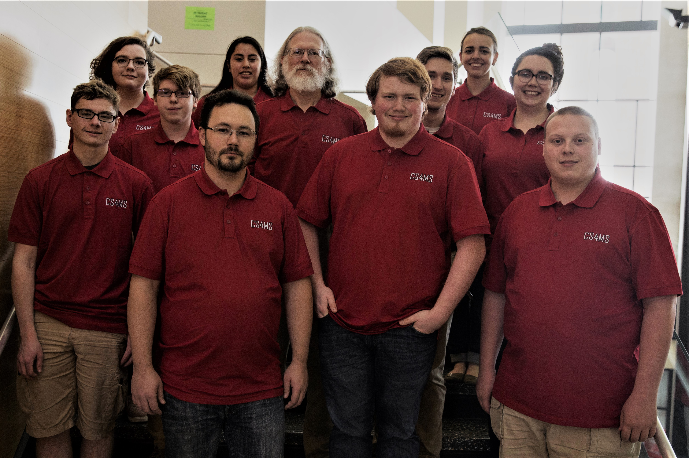

About Us
We are Immersive Learning students who worked with neighboring schools to promote their teaching of computer science (CS) and computational thinking (CT). Research suggests that social and cultural factors may be behind under-representation of many demographics in scientific, technology, engineering, and mathematics (STEM) fields, such as the lack of awareness of STEM opportunities. Typical school curriculums expose students to the natural sciences and mathematics more frequently than CS and CT. As a result, students have little idea what it means to be a computer scientist and lose the opportunity to become one.
To facilitate this project, we partnered with a variety of local schools. They serve students from diverse backgrounds who frequently do not have the resources available to participate in CS and CT activities. The focus of this immersive learning course is to expose our partners' students, particularly underrepresented minorities and females, to CS and CT. This project aims to assist the teachers by curating, developing, and documenting lessons and activities that incorporate CS and CT experiences for their students.
CS4MS+ in the news
Watch a short video about the CS4MS+ immersive learning project.
Ball State, Muncie schools partner to expose students to computer science opportunities (RTV6, 02/18/2019)
Lebanon native helps lead new computer science initiative (The Lebanon Reporter, 12/27/2019)
Immersive learning project brings computer science to MCS (The Ball State Daily News, 02/27/2020)
Project participants
